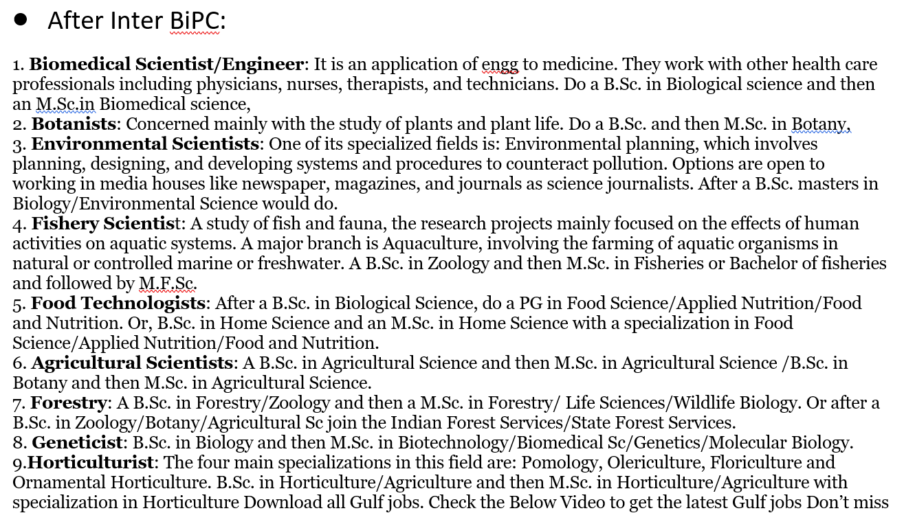
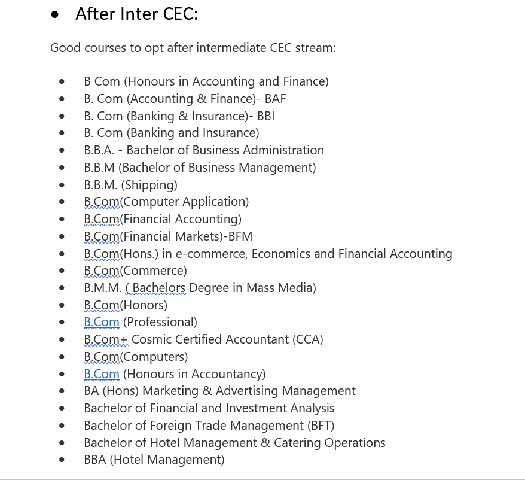
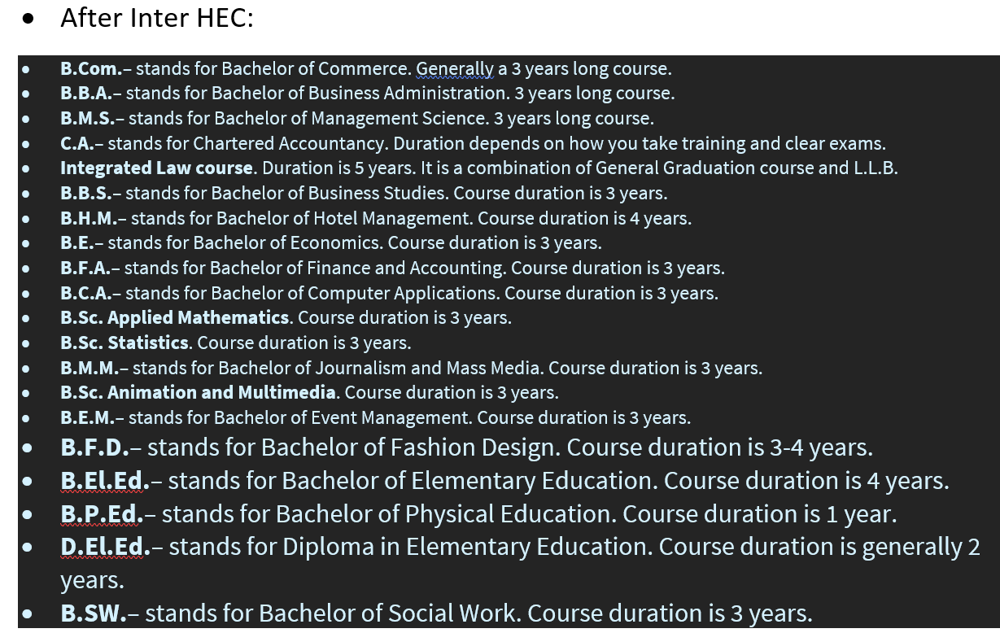

Class 10th is a Game Changer…
There are two main Career options after 10th Class
1. Higher Studies
2. Job Opportunities
Higher Studies after 10th Class: |
1) Intermediate (11th, 12th Class/ PUC)
|
General Courses (Science and Humanities) along with Languages (English, Telugu, Hindi, Sanskrit, French, Arabic) It is a two years course.
• MPC - Maths, Physics, Chemistry
• BiPC – Biology (Botany, Zoology), Physics, Chemistry
• CEC - Civics, Economics, Commerce
• MEC - Maths, Economics, Commerce
• HEC - History, Economics, Civics/Commerce
• MBPC - Maths, Biology, Physics, Chemistry
"Compulsory Paper- Ethics and Human Values"
2) Polytechnic |
POLYCET (Polytechnic Common Entrance Test); CEEP (Common Entrance Exam for Polytechnic) Diploma Courses in Engineering and Non-Engineering. It is a three years course.
• Diploma in Civil Engineering
• Diploma in Electrical Engineering
• Diploma in Mechanical Engineering
• Diploma in Electronics and Communication Engineering
• Diploma in Computer Engineering
• Diploma in Garment Technology
• Diploma in Home Science
• Diploma in Agriculture
ITI (Industrial Trading Institute)/ ITC (Industrial Training Center) | It is a two year courses of Engineering and Non-Engineering Field. It is called as Trade Industry where you can learn basic skills in technical field. AITT (ALl India Trade Test)
• Electrician
• Carpenter
• Plumber
• Fitter
• Mechanic
• Technician
4) Paramedical
Paramedical |
Allied Healthcare Course: It is about Healthcare workers who provide clinical services for patients under the supervision of a Physician. They are two year courses.
• DMLT- Diploma in Medical Laboratory Technology
• DHFM - Diploma in Hospital Food Service Management
• DOT - Diploma in Opthalmic Technology
Short-term Courses |
They are called the job oriented courses that are useful to get a job after short span of time. Usually 6-12 months courses.
• Diploma in 2D and 3D Animation
• Diploma in Computer Applications
• Certificate Course in Graphic Designing
• Certificate Programme in MS-Office
• Certificate Course in Web Designing
• Certificate Course in Programming Language (JAVA, C++, PHP, SQL)
• Certification Course in SEO (Search Engine Optimization)
6) Other Vocational Courses: to provide more practical skills technically.
• Banking and Financial Service Course - 2 Years
• DTP (Desktop Publishing) and Printing Technology - 1 Year
• Diploma in Insurance and Marketing - 1 Year
• Tourism and Travel Techniques Course - 2 Years
• Pre-School Teacher Training - 2 Years
• Hotel Operations Course - 2 Years
• Dental Technician Course - 2 Years
Job opportunities after 10th Class:
1) Defence Examinations: |
a) Indian Army - Posts of Soldiers in Technical Cadre
• Indian Army Soldier Clerk's Examination
• Indian Army Soldier General Duty Examination (NER)
• Indian Army Soldier Technical Examination (MER)
• Indian Army Soldier Nursing Assistant Examination (MER)
b) Indian Air Force - Non-Technical Cadre
• IAF Airman Non-Technical Trade's Examination
c) Indian Navy - Naval Branch of the Armed Forces of India
• Indian Navy Dock Yard Apprentices Examination
• Indian Navy Sailors Matric Entry Recruitment Examination
• Indian Navy Artificer Apprentices Examination
2) Central Reserve Police Force (CRPF):
• Constable (Technical and Tradesman) in CRPF
3) Border Security Force (BSF):
• BSF Constable Recruitment
4) Staff Selection Commission (SSC):
SSC Multitasking (Non-Technical) Staff Recruitment
|
Explore your interest as you have lots of subjects in options to select. Don't select options depending on which subject you like or which subject is easy. Because there may be 1 subject you like but other subjects in that field may be difficult for you, then it would be wrong choice.
Select the field which you don't feel bored even after studying so much. That is, think of your final goal. Don't depend on results/Marks. Percentage is not the only factor, there are many other things like interest and ability to study. Decide now itself what you want to study after 12th and what you need to study to achieve that goal.
after inter |


